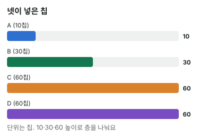

안녕하세요. 오늘은 처음엔 누구나 헷갈리는 사이드팟이에요.
스택이 서로 다른 사람들이 한 판에 올인하면, 팟이 한 덩어리가 아니라 여러 층으로 나뉘어요. 쇼다운에서 1등이 팟을 다 가져가지 못하는 일도 생기죠. 오늘은 그 층을 직접 쌓아 보면서, 왜 그렇게 나누는지까지 이해해 볼게요.
이 글에서 배울 것
- 팟이 여러 층으로 나뉘는 단 하나의 원칙: 넣은 만큼만 받을 수 있다
- 작은 올인부터 층을 쌓아 메인팟·사이드팟을 나누고, 합계로 검산하는 법
- 폴드한 사람의 칩, 아무도 콜하지 않은 칩은 어디로 가는지
1단계. 왜 팟이 나뉠까?
원칙은 하나
우리가 넣은 만큼만, 다른 사람에게서도 받을 수 있어요.
20칩만 가진 사람이 올인했다면, 그 사람은 다른 사람들에게서도 한 사람당 20칩까지만 이길 수 있어요. 그보다 더 걸 칩이 없으니까요. 그 위로 쌓인 칩은 나머지 사람들끼리의 싸움이에요.
비유: 층이 있는 케이크
층이 있는 케이크를 떠올려 보세요. 맨 아래층은 모두가 돈을 냈으니 모두가 먹을 자격이 있어요. 위층으로 갈수록 거기까지 돈을 낸 사람만 먹을 수 있고요.
이게 무슨 뜻이냐면, 짧은 스택이 아무리 좋은 핸드를 들었어도 자기가 낸 층까지만 가져간다는 거예요. 그게 공평하죠. 지면 20칩만 잃을 사람이 이겼다고 50칩씩 받으면 안 되니까요.
2단계. 나누는 순서
- 각자 이번 판에 넣은 총액을 적어요
- 올인한 사람 중 가장 작은 금액까지 모두에게서 걷어요 → 메인팟
- 남은 사람들 중 다음으로 작은 금액까지 걷어요 → 사이드팟
- 끝까지 반복해요. 마지막에 한 사람만 넣은 금액은 아무도 콜하지 않은 칩이라, 팟이 아니라 그 사람에게 돌려줘요
중간에 폴드한 사람이 넣은 칩도 넣은 금액만큼 각 층에 들어가요. 다만 폴드한 사람은 어느 팟도 가져갈 수 없어요. 이건 아래 4단계에서 직접 볼게요.
3단계. 예시 1 — 세 명
A는 20칩 올인, B와 C는 50칩씩 넣었어요.
아래층부터 쌓기
- 메인팟: 가장 작은 올인이 20칩이니, 셋 다 20칩씩 → 20 × 3 = 60칩 (A·B·C 모두 자격)
- 사이드팟: B와 C에게 남은 30칩씩 → 30 × 2 = 60칩 (B·C만 자격)
검산
60 + 60 = 120칩이 셋이 넣은 20 + 50 + 50 = 120칩과 같아요. 맞게 나눴어요.
누가 무엇을 가져가나
쇼다운에서 A가 가장 좋은 핸드라면 A는 메인팟 60칩만 가져가요. 사이드팟은 B와 C 중 더 좋은 핸드가 가져가요.
A는 20칩을 걸고 B·C에게서 20칩씩, 합쳐서 40칩을 땄어요. 자기가 건 만큼만 상대 한 명 한 명에게서 받은 거예요.
4단계. 폴드한 사람이 있으면
예시: D가 중간에 폴드
예시 1과 같은데, 네 번째 사람 D가 있어요. 플랍에서 D가 30칩을 벳하고, A는 가진 20칩 전부로 올인 콜, B·C는 30칩씩 콜했어요. 턴에 B·C가 20칩씩 더 넣는 동안 D는 폴드했고요.
그래서 이번 판에 넣은 총액은 A 20칩 올인, B·C 50칩씩, D 30칩(폴드)이에요.
층의 높이는 팟을 가져갈 수 있는 사람(A·B·C)의 금액으로만 정해요. 20칩과 50칩, 두 층이에요.
- 메인팟(20칩 층): A·B·C에게서 20칩씩, D에게서도 20칩 → 80칩 (A·B·C 자격)
- 사이드팟(20칩 위 ~ 50칩): B·C에게서 30칩씩, D에게서 남은 10칩 → 70칩 (B·C 자격)
검산과 뜻
80 + 70 = 150칩이 넣은 돈 20 + 50 + 50 + 30 = 150칩과 같아요.
이게 무슨 뜻이냐면, 폴드한 D의 칩은 사라지지 않고 층마다 나눠 들어가는데, D는 어느 층의 주인도 될 수 없다는 거예요. D의 30칩 중 20칩은 메인팟으로, 나머지 10칩은 사이드팟으로 갔어요.
5단계. 예시 2 — 네 명, 층이 세 개
A 10칩, B 30칩, C와 D는 60칩씩 넣었어요.
| 팟 | 계산 | 금액 | 자격 |
|---|---|---|---|
| 메인팟 | 10 × 4 | 40칩 | A·B·C·D |
| 사이드팟 1 | (30 − 10) × 3 | 60칩 | B·C·D |
| 사이드팟 2 | (60 − 30) × 2 | 60칩 | C·D |

합계 40 + 60 + 60 = 160칩, 넷이 넣은 10 + 30 + 60 + 60 = 160칩과 같아요. 이렇게 합계로 검산하면 실수를 잡을 수 있어요.
층마다 따로 1등을 뽑아요
쇼다운에서는 층마다 그 층에 자격이 있는 사람끼리 1등을 가려요.
- 사이드팟 2: C·D 중 더 좋은 핸드
- 사이드팟 1: B·C·D 중 가장 좋은 핸드
- 메인팟: 넷 중 가장 좋은 핸드
팟을 나눠 주는 순서는 하우스마다 다를 수 있지만, 어느 순서로 줘도 누가 무엇을 받는지는 같아요. 층마다 1등이 이미 정해져 있으니까요.
왜 그럴까: 사이드팟은 "한 사람씩 따로 붙는 내기"를 묶은 거예요
둘씩 붙는 내기로 쪼개 보면
사이드팟이 복잡해 보이는 건 여러 명을 한꺼번에 보기 때문이에요. 사실은 두 사람씩 따로 붙는 내기를 모아 놓은 거예요.
예시 1에서 A와 B 사이의 내기는 얼마일까요? A는 20칩밖에 없으니, A와 B는 20칩씩만 걸 수 있어요. A와 C도 20칩씩이고요. B와 C는 둘 다 50칩이 있으니 50칩씩 걸 수 있어요.
그 내기를 층으로 정리한 것
이 내기들을 "모두가 걸 수 있는 금액"부터 모으면 바로 층이 돼요.
- 셋 다 걸 수 있는 20칩씩 → 메인팟
- B·C만 더 걸 수 있는 30칩씩 → 사이드팟
그래서 A가 1등이면 B·C에게서 20칩씩만 받고, 나머지는 B와 C의 승부로 남는 거예요. 메인팟과 사이드팟은 이 원칙을 계산하기 편하게 정리한 표일 뿐이에요.
돌려주는 칩도 같은 원리
예시 1을 조금 바꿔서, A 20칩 올인, B 50칩, C는 30칩까지만 넣었다고 해 볼게요. 메인팟은 20 × 3 = 60칩, 사이드팟은 B·C의 20칩 위 ~ 30칩 구간이라 (30 − 20) × 2 = 20칩이에요.
그럼 B가 C보다 더 넣은 20칩은요? B와 C의 내기는 C가 가진 30칩까지만 성립해요. 그 위쪽 칩은 맞서 건 사람이 아무도 없으니, 팟이 아니라 B에게 그대로 돌아가요. 합계도 60 + 20 + 20 = 100칩으로 넣은 돈 20 + 50 + 30 = 100칩과 맞아요.
자주 하는 실수
실수 1. "1등이 팟을 전부 가져간다" 예시 1에서 A가 1등이어도 가져가는 건 메인팟 60칩뿐이에요. 전체 120칩을 다 주면, A는 20칩만 걸고 B·C에게서 50칩씩 받는 셈이 돼요. 대신 1등을 가리기 전에 층부터 나누고, 층마다 1등을 따로 뽑아요.
실수 2. 폴드한 사람의 칩을 빼고 계산하기 4단계에서 D의 30칩을 빼고 나누면 메인팟 60칩, 사이드팟 60칩이 나와요. 그러면 합계 120칩이 넣은 돈 150칩과 안 맞아요. 대신 폴드한 사람의 칩도 넣은 금액만큼 층에 넣고, 자격 칸에서만 빼요.
실수 3. 가장 큰 스택 기준으로 한 번에 걷기 예시 1에서 "제일 많이 넣은 50칩 기준으로 셋에게서 다 걷자"고 하면, A가 가진 적도 없는 칩까지 세게 돼요. 합계가 넣은 돈 120칩보다 많아지니 검산에서 바로 틀린 게 보이죠. 대신 층은 언제나 가장 작은 올인부터 쌓아요.
"같은 층에서 핸드가 똑같으면 어떻게 나눠요?"
좋은 질문이에요. 그 층에 자격이 있는 사람 중 가장 좋은 핸드가 둘 이상이면, 그 층의 팟을 그 사람들이 똑같이 나눠요(스플릿). 다른 층은 상관없이 그 층만 나눠요.
예를 들어 예시 2에서 사이드팟 2를 두고 C와 D가 똑같은 핸드라면, 사이드팟 2를 반씩 나눠 가져요. 칩이 딱 나누어떨어지지 않으면 남는 칩은 흔히 버튼 왼쪽에서 가장 가까운 사람에게 줘요(TDA 규정 기준, 매장마다 다를 수 있음).
선생님의 한마디
- 팟을 나누기 전에 각자 넣은 총액부터 적기
- 가장 작은 올인부터 층을 쌓고, 층마다 자격 있는 사람 적기
- 다 나눈 뒤 합계 = 넣은 돈 합계로 검산하기
연습 문제
학습툴에는 사이드팟을 넣어 보는 화면이 없어요. 종이에 각자 넣은 금액을 적고 층을 쌓아 보세요.
문제 1. A 15칩 올인, B와 C는 40칩씩. 메인팟과 사이드팟은?
정답 보기
메인팟 15 × 3 = 45칩(A·B·C), 사이드팟 (40 − 15) × 2 = 50칩(B·C). 합계 45 + 50 = 95칩이 넣은 돈 15 + 40 + 40과 같아요.
문제 2. A 25칩, B 25칩, C 70칩, D 100칩. 팟을 나누고, D의 칩은 어떻게 되는지 말해 보세요.
정답 보기
메인팟 25 × 4 = 100칩(A·B·C·D), 사이드팟 (70 − 25) × 2 = 90칩(C·D). A와 B가 똑같이 25칩이라 둘이 한 층을 이뤄요. 사이드팟을 하나 더 만들지 않아요. D가 C보다 더 넣은 30칩은 아무도 콜하지 않은 칩이라, 팟이 아니라 D에게 돌려줘요.
핵심 정리
- 원칙은 하나: 넣은 만큼만 다른 사람에게서도 받을 수 있어요
- 사이드팟은 두 사람씩 붙는 내기를 "모두가 걸 수 있는 금액"부터 모아 층으로 정리한 거예요
- 층의 높이는 팟을 가져갈 수 있는 사람의 금액으로 정하고, 폴드한 사람의 칩은 층마다 들어가되 자격은 없어요
- 맞서 건 사람이 없는 칩은 팟이 아니라 주인에게 돌아가요
정리하며
오늘은 올인이 여러 명일 때 팟을 층으로 나눠 봤어요.
세 명, 폴드한 사람이 낀 네 명, 층이 세 개인 네 명까지 차례로 쌓아 보니, 어떤 경우든 짧은 스택은 자기가 건 층까지만 가져갔어요. 1등이라고 팟을 다 가져가는 게 아니라는 것, 오늘은 그것 하나만 확실히 기억하면 충분해요.
다음 글 B14에서는 다시 팟오즈로 돌아가요. 콜에 필요한 승률(필요 에퀴티)을 우리가 실제로 이길 확률과 나란히 놓고 콜과 폴드를 정하는 법을 봐요.
AI 작성 · 숫자는 계산 검증 · 룰 근거: TDA 규정 기준 · 매장·대회마다 다를 수 있음